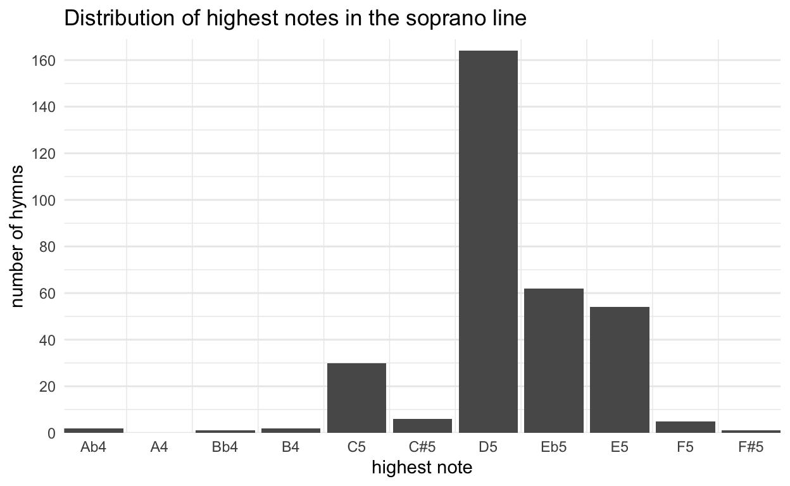
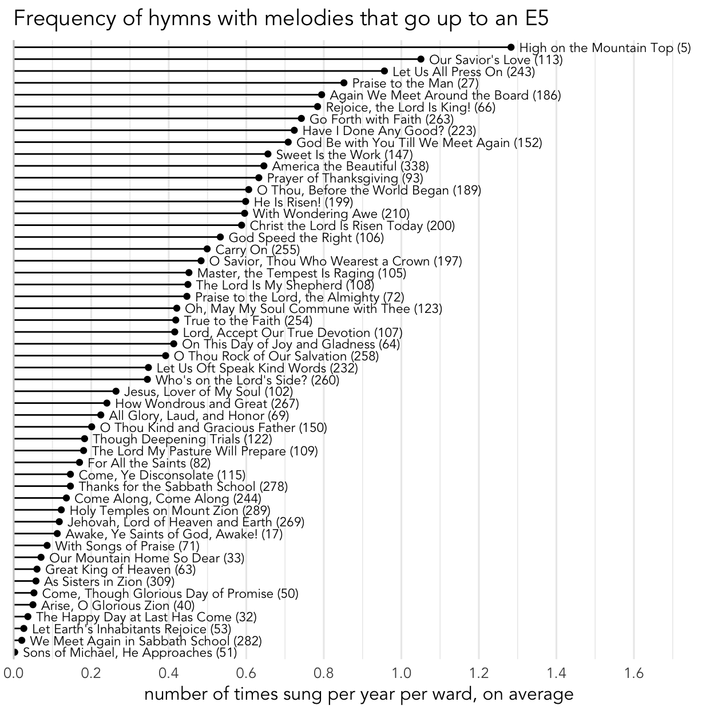
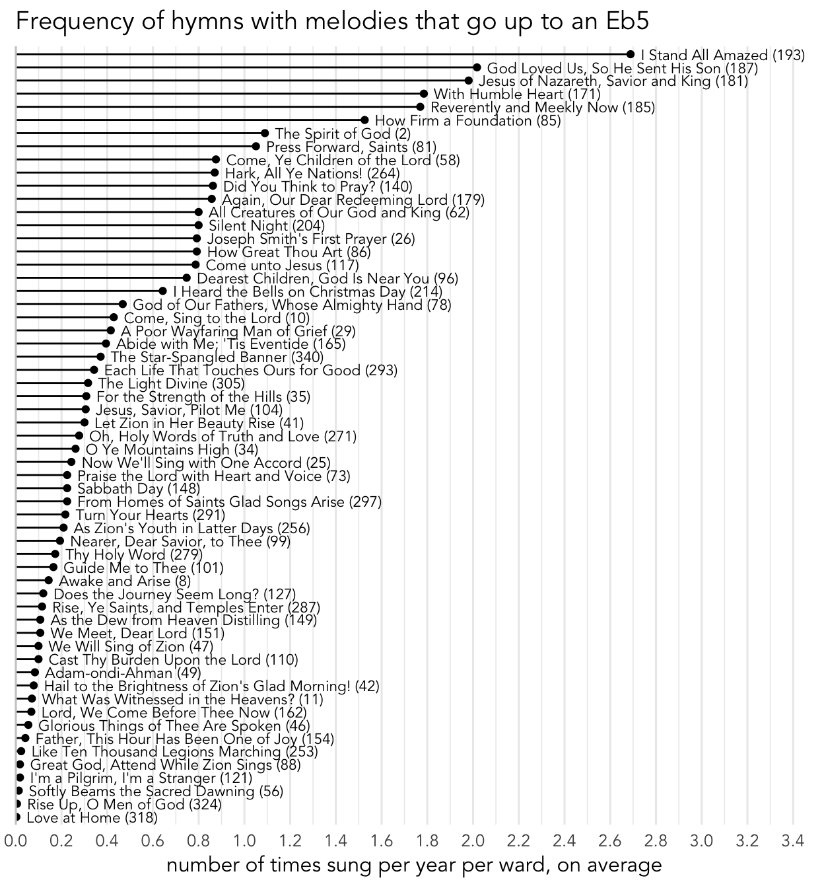
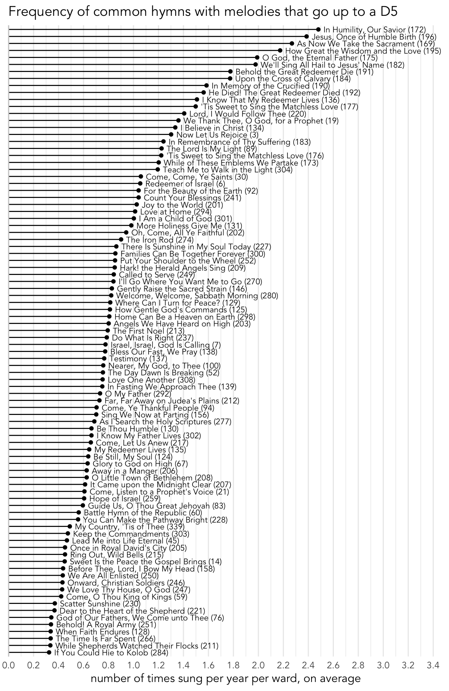
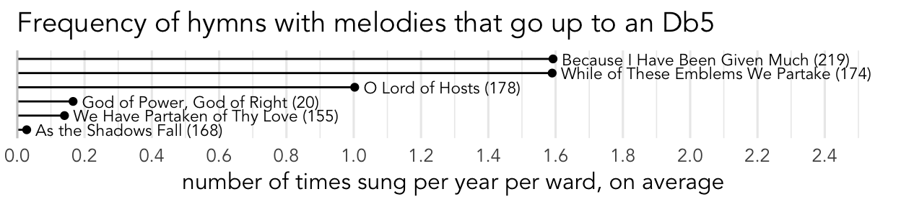
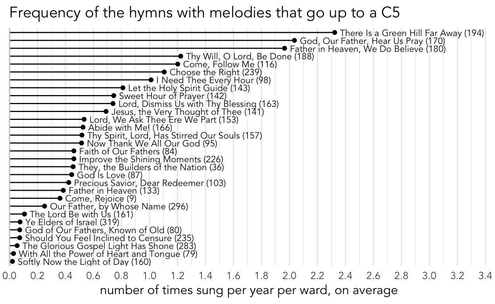

What are the highest notes in the melodies?
melody
musicology
What hymn has the highest melody note? What is a typical highest note for a soprano line? What is the lowest highest note for a melody? If you can only sing up to a C, what proportion of hymns would you be able to sing melody on?
In addition to collecting data on how often hymns are sung in sacrament meeting, I have also gone through the rather painstaking process of quantifying all the actual music of the hymns. What I mean is that for every part (soprano, alto, tenor, and bass) for every hymn, I went through and wrote down the pitch and duration of every note in a spreadsheet. With this music now reduced down to numbers, I can analyze it quantitatively. This post is the first of many that will present a numeric analysis of the music of the hymns themselves. I’ve started with the soprano line since it’s what is most familiar to most people, but I’ll eventually do similar posts on alto, tenor, and bass lines as well.
Highest melody notes
The first question we can ask is this: what is the highest note a melody goes up to?
That of course excludes the optional G5 at the end of
For what it’s worth, a combined choir from BYU sang it in General Conference in April 2008 and it was beautiful.
Well then, what is a typical highest note for a soprano line?
| Highest Note | Number of Hymns | Percentage of Hymnal |
|---|---|---|
| Ab4 | 2 | 0.61% |
| Bb4 | 1 | 0.31% |
| B4 | 2 | 0.61% |
| C5 | 30 | 9.17% |
| C#5 | 6 | 1.83% |
| D5 | 164 | 50.15% |
| Eb5 | 62 | 18.96% |
| E5 | 54 | 16.51% |
| F5 | 5 | 1.53% |
| F#5 | 1 | 0.31% |
There are another five hymns that have melody lines that go up to an F5. But, as seen below, the only one that is moderately common is
| Hymn | How often it’s sung |
|---|---|
| The Morning Breaks (1) | Once every 3.5 years |
| Great Is the Lord (77) | Once every 30 years |
| The Wintry Day, Descending to Its Close (37) | Once every 60 years |
| Ye Simple Souls Who Stray (118) | Once every 60 years |
| Sweet Is the Work (317) | Never? |
So, six of the 341 hymns on our current hymnal go up to an F5 or F♯5, which is 1.76% of the hymnal. If all hymns were sung equally often as each other, we’d then expect that 1.76% of sacrament meeting hymns to go up to an F5 or F♯5. In reality, only 0.24% of them do, which means these six hymns are less common than expected. On average, you’ll encounter one maybe once every two and a half years. And if you do, three-quarters of the time it’ll be
I can’t help but wonder whether that high melody note is the reason these hymns are so uncommon. It may be the case that they are unusual hymns anyway that for whatever reason are not sung very often. But I think that these hymns are uncommon at least partially because of these high notes. A music chairperson might consider selecting one of these for their ward to sing in sacrament meeting, but for the sake of everyone’s voices, ultimately decides against it. Thus, the high note perpetuates the rarity of the hymn. We saw this with the key signatures as well: hymns with marginally-attested phenomena (in this case, the keys of A and Db) are rarer than they would be due to chance alone.
Not the highest, but still pretty high melody notes
Okay, so melodies that go up to an F5 or higher are just not that common. Once we start looking at the E5 and E♭5 territory, there are many more hymns that include notes in that range, and some of those hymns are pretty common.
There are 54 hymns have E5 as the highest note in their melody, including some of the more common ones like

As far as hymns that have E♭5 as the highest note, there are 58 of them, or 18.18% of the hymns. Some of the more common ones include

In total, 115 hymns, or 35.9% of the hymnal go up to an E\(\flat\) or higher.
Typical highest notes for a melody
However, D5, or the D an octave and one note above middle C, is by far the most common highest note for the melody in the hymnal. 164 hymns—that’s 51.3% of the hymnal!—have this as the highest note, including

Hymns where the melody doesn’t go very high
The remaining 13% of the hymns have melodies that don’t go as high. There are only 6 that go up to a C♯ or D♭, including

I think there are relatively few that have this particular note simply because of what key signatures are most common. It’s probably not a coincidence that one of the two hymns in D♭ are in this category. Most of the others are in A♭. If there were more hymns in D♭ major, or even A♭ we might see more hymns where the highest note is D♭5.
Another 30 hymns only go as high as a C5, including

There are five hymns don’t ever go higher than the middle of the treble clef. The two that only go to a B4 are both pretty well known:
These two hymns are low enough that even a good tenor could sing the melody in the right octave! In total, there are just five hymns that don’t reach a C5, which is only 1.5% of the hymnal. And they’re rarer hymns, so they only make up 0.72% of the hymns sung in sacrament meeting. So, if your highest note is a B, you might be able to sing melody once every 10 months or so. At least these lower hymns are more common that the hymns that go up to an F5 or F♯5!
Summary
The highest note in the soprano line is an F♯5. About half of the hymns go up to D5, with many more going a little higher than that. Fewer never reach a D5. The lowest highest note in the soprano line is an A♭4.
Personally, singing above about a B is not easy for me. So, if I were in charge, I’d selfishly transpose many of these hymns down a bit so that their highest note is in a more comfortable range for me. But, I know many other people have no problem singing a D or even an E, so I’m not recommending that the hymnal lower any of these hymns.